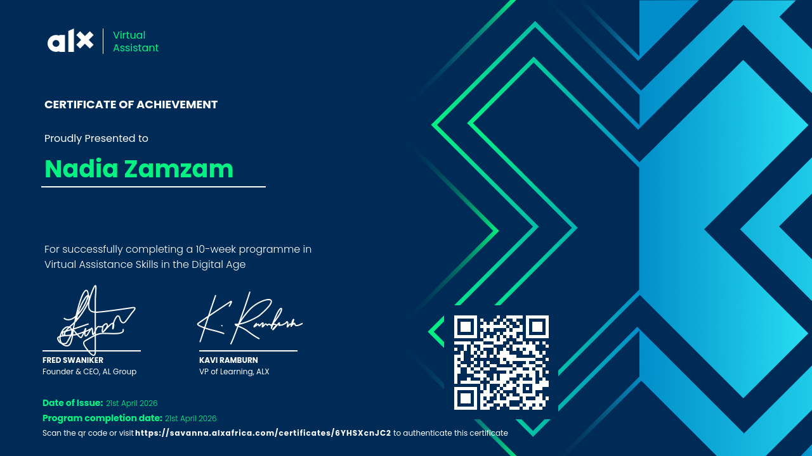

Email assistance
Sorting messages, drafting clear replies, flagging priorities and keeping an inbox easier to manage.
VIRTUAL ASSISTANT · KAMPALA, UGANDA
I help people keep everyday work organised — from inboxes and schedules to research, data entry and customer enquiries.
A LITTLE ABOUT ME
My background combines customer-facing work, small-business experience and Virtual Assistant training. I enjoy bringing order to tasks, communicating clearly and making sure the small details are not missed.
I have worked in hospitality and retail, where listening, patience and staying organised matter every day. I am now building on those strengths through digital administration and remote support.
HOW I CAN HELP
Sorting messages, drafting clear replies, flagging priorities and keeping an inbox easier to manage.
Organising appointments, preparing simple schedules and helping avoid missed meetings.
Entering, checking and arranging information in spreadsheets and documents with care.
Finding information online, summarising useful details and preparing tidy documents.
Responding politely to enquiries and helping customers get the information they need.
Formatting letters, reports, lists and other everyday office documents.
SELECTED PRACTICE WORK
These are self-created demonstration samples, not paid client projects.
ADMINISTRATION
A simple process for sorting messages, identifying urgent items and tracking replies.
View sample ↗SPREADSHEETS
A sample spreadsheet with clear columns, status tracking and basic totals.
Download spreadsheet ↓RESEARCH
A short example showing how to compare options using consistent criteria.
View sample ↗SCHEDULING
A sample daily schedule with meeting blocks, preparation time and reminders.
View sample ↗CUSTOMER CARE
Polite, straightforward replies for common customer questions and follow-ups.
View sample ↗EXPERIENCE
Welcomed customers, handled orders, responded to requests and worked with colleagues during busy service periods.
Assisted customers, answered product questions, organised stock displays and supported daily shop operations.
Developing knowledge in business and technology, alongside practical digital skills.
TRAINING & DEVELOPMENT
ALX Africa · Certificate of Achievement
Successfully completed a 10-week programme in Virtual Assistance Skills in the Digital Age.

GET IN TOUCH
Tell me what you need support with. I would be glad to discuss how I can help.